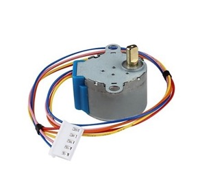
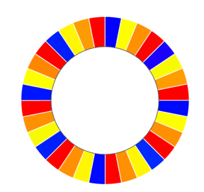
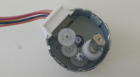
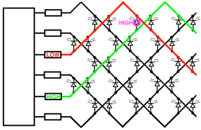
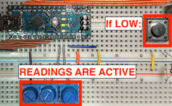
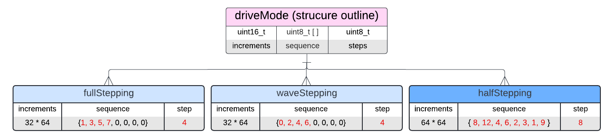

2024 · Embedded Systems + PCB
CharlieClock
Built a custom clock using charlieplexed LEDs, an Arduino Nano, a stepper motor date indicator, user-adjustable controls, custom PCBs, and a 3D-printed enclosure.

Video Demonstration
Working demonstration
The project video shows the physical build, behaviour, and final result.
 ▶ Watch on YouTube
▶ Watch on YouTube
Project Overview
Control 132 LEDs and a mechanical date indicator with limited microcontroller pins.
The design had to control hours, minutes, seconds, and day-of-month indication while staying within the limited pin budget of the Arduino Nano.
What I built
- 132-LED charlieplexed clock face
- 28BYJ-48 stepper motor date system
- Potentiometer/button time-setting interface
- Custom PCB for controls and motor routing
- 3D printed enclosure and disc assembly
Technical Skills
Skills demonstrated
Charlieplexing
Applied directly in the design, build, debugging, or final integration of the project.
Stepper motor control
Applied directly in the design, build, debugging, or final integration of the project.
Embedded timing
Applied directly in the design, build, debugging, or final integration of the project.
PCB design
Applied directly in the design, build, debugging, or final integration of the project.
Mechanical integration
Applied directly in the design, build, debugging, or final integration of the project.
Build Story
Stepper motor, charlieplexing, and calibration graphics
Enclosure and disc prints
The image to the right shows the printed date disc graphic that pairs with the stepper motor to indicate the day of the month.

Internal electronics
The image to the right shows the inside of the stepper motor gearbox, helping explain how the motor achieves a large gear reduction and precise movement.

Charlieplexing logic
The image to the right shows the charlieplexing matrix, where different anode/cathode pin pairs allow a small number of microcontroller pins to control many LEDs.

Control PCB
The image to the right shows the calibration/control breadboard, where the potentiometers and button are used to set the clock and stepper position.

Finished clock
The image to the right shows the setup flow used to calibrate the stepper motor, set the month, and set the day before the clock begins running.
